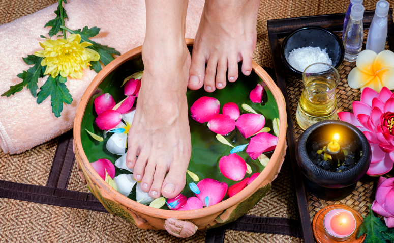
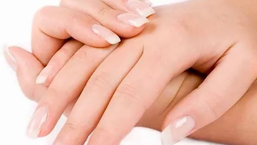

Spa dos Pés
Podologia
Podologia é um ramo auxiliar da área da saúde cuja atuação concentra-se na anatomia e fisiologia dos pés. Desenvolve conhecimento biomecânico do tornozelo e dos pés, a fim de compreender a marcha e os problemas que a dificultam, podendo desta forma, implementar tratamento prescrito por profissionais da área médica. O podólogo é o profissional treinado e qualificado para cuidar corretamente dos pés das pessoas com diabetes e de outras doenças, como onicocriptose (unha encravada), aplicação de órtese para correção do formato da unha, calos, calosidade, bolhas, fissuras (rachaduras), bromidrose (mau-cheiro), micose interdigital (frieiras), além de auxiliar a medicina em estratégia de tratamento, como no caso das micoses de unha.
Quirologia
Quirologia tem uma base nos conceitos da Podologia, e é a ciência que cuida e previne algumas doenças das mãos, e também trata algumas doenças superficiais, os procedimentos são realizados utilizando instrumentais profissionais, esterilizados e descartáveis, é possível obter um excelente resultado e manter as unhas limpas, saudáveis e a pele hidratada.